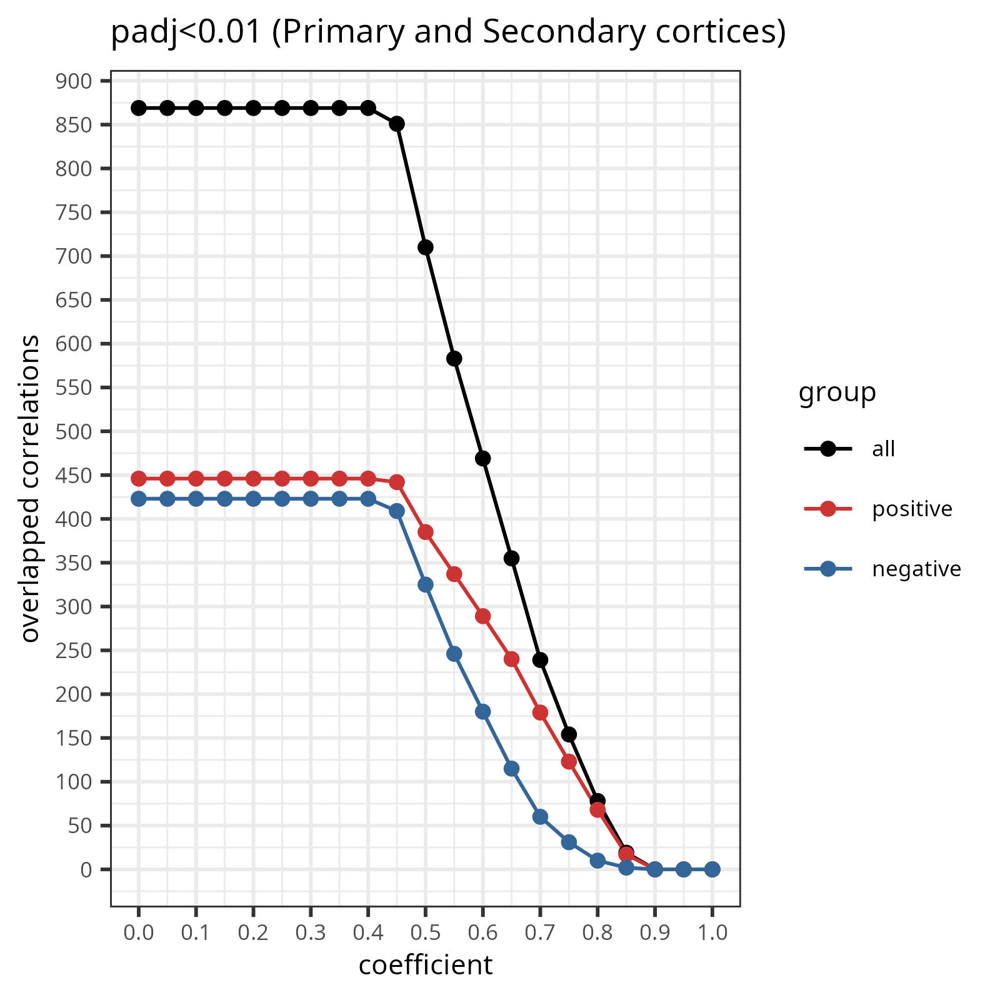

library(dplyr)
library(purrr)
library(ggplot2)5 primary and secondary cortex correlation check
From previous results, we know that only cluster1 and cluster2 have correlations detected. In this section, I am going to analyze the 1000 iterations result: (1) check with pvalue (2) check the idea range of coefficient (3) overlapped the results with ChIP-exo. Then we will finally get how many correlations that we want to go further.

5.1
5.2 1 check if KRAB-ZNFs are more correlated with TEs
First, I select a criteria using adjusted p-value less than 0.01 with coefficients increment 0.5.
# Create a vector of file names
file_names <- paste0("../data/results_c1/gene_", 1:1000, "_vs_TE_corr.csv")
# Use lapply to read and filter each file
temp_list <- lapply(file_names, function(file_name) {
data <- read.csv(file_name)
filtered_data <- data %>% filter(padj < 0.01)
nrow(filtered_data)
})
# Combine the results into a single vector
temp_list_c1 <- unlist(temp_list)
larger_count <- sum(temp_list_c1 > nrow(hsC1_sig))
total_values <- length(temp_list_c1)
percentage <- larger_count / total_values * 100
print(percentage)df_bar_c1 <- data.frame(
count = temp_list_c1,
group = "cluster1"
)
df_bar_c2 <- data.frame(
count = temp_list_c2,
group = "cluster2"
)
df_bar <- rbind(df_bar_c1, df_bar_c2)
df_bar <- rbind(df_bar, c(127797, "cluster1"))
df_bar <- rbind(df_bar, c(49770, "cluster2"))
df_bar$count <- as.numeric(df_bar$count)
g_bar <- ggplot(df_bar, aes(x=group, y=count/1000, fill=group)) +
geom_boxplot() +
geom_point(data = df_bar[df_bar$group == "cluster1" & df_bar$count == 127797, ],
aes(color = "TE:KRAB-ZNF"), size = 2) +
geom_point(data = df_bar[df_bar$group == "cluster2" & df_bar$count == 49770, ],
aes(color = "TE:KRAB-ZNF"), size = 2) +
ylab("count (10^3)") +
xlab("") +
theme_bw() +
scale_fill_manual(values = c("#e69138", "#e0c77b"))
ggsave(g_bar, file="../figures/barplot_c1c2_check.jpg", dpi=400, width=4, height=4)chip_exo <- read.csv("../../randomGeneSet/ChIP_Exo_Tables/kznfs_TEs_ChIP_exo_modified.csv")
chip_exo_pair <- chip_exo %>%
mutate(pair = paste0(teName, ":", geneName))
overlapped <- intersect(hsC1_sig$pair, chip_exo_pair$pair) #869
# create a dataframe, col1=count, col2=coefficient
df_temp <- data.frame(
count=numeric(),
coef=numeric(),
group=character()
)
df_pos <- data.frame(
count=numeric(),
coef=numeric(),
group=character()
)
df_neg <- data.frame(
count=numeric(),
coef=numeric(),
group=character()
)
for (i in seq(from=0, to=1, by=0.05)){
filter_c1 <- hsC1_sig %>% filter(pair %in% overlapped)
count <- filter_c1 %>% filter(abs(coef)>=i) %>% nrow()
pos_count <- filter_c1 %>% filter(coef>=i) %>% nrow()
neg_count <- filter_c1 %>% filter(coef<= i*(-1)) %>% nrow()
coef <- i
df_temp <- rbind(df_temp, c(count, coef, "all"))
df_pos <- rbind(df_pos, c(pos_count, coef, "positive"))
df_neg <- rbind(df_neg, c(neg_count, coef, "negative"))
}
colnames(df_temp) <- c("count", "coefficient", "group")
colnames(df_pos) <- c("count", "coefficient", "group")
colnames(df_neg) <- c("count", "coefficient", "group")
df_merge <- rbind(df_temp, df_pos, df_neg)
df_merge$count <- as.numeric(df_merge$count)
df_merge$coefficient <- as.numeric(df_merge$coefficient)
df_merge$group <- factor(df_merge$group, levels = c("all", "positive", "negative"))gc1 <- ggplot(df_merge, aes(x=coefficient, y=count, color=group)) +
geom_line() +
geom_point() +
scale_x_continuous(breaks=seq(0, 1, by=0.1)) +
scale_y_continuous(breaks=seq(0, 1000, by=50)) +
theme(axis.text.x = element_text(angle=45, vjust=0.5, hjust=1))+
ylab("overlapped correlations") +
ggtitle("padj<0.01 (Primary and Secondary cortices)") +
scale_color_manual(values=c("black", "#cc3433", "#336699")) +
theme_bw() +
theme(text = element_text(size=8))
ggsave(gc1, file="../figures/correlation_check_c1.jpg", dpi=400, width=4, height=4)overlapped_c2 <- intersect(hsC2_sig$pair, chip_exo_pair$pair) #869
# create a dataframe, col1=count, col2=coefficient
df_temp <- data.frame(
count=numeric(),
coef=numeric(),
group=character()
)
df_pos <- data.frame(
count=numeric(),
coef=numeric(),
group=character()
)
df_neg <- data.frame(
count=numeric(),
coef=numeric(),
group=character()
)
for (i in seq(from=0, to=1, by=0.05)){
filter_c2 <- hsC2_sig %>% filter(pair %in% overlapped)
count <- filter_c2 %>% filter(abs(coef)>=i) %>% nrow()
pos_count <- filter_c2 %>% filter(coef>=i) %>% nrow()
neg_count <- filter_c2 %>% filter(coef<= i*(-1)) %>% nrow()
coef <- i
df_temp <- rbind(df_temp, c(count, coef, "all"))
df_pos <- rbind(df_pos, c(pos_count, coef, "positive"))
df_neg <- rbind(df_neg, c(neg_count, coef, "negative"))
}
colnames(df_temp) <- c("count", "coefficient", "group")
colnames(df_pos) <- c("count", "coefficient", "group")
colnames(df_neg) <- c("count", "coefficient", "group")
df_merge <- rbind(df_temp, df_pos, df_neg)
df_merge$count <- as.numeric(df_merge$count)
df_merge$coefficient <- as.numeric(df_merge$coefficient)
df_merge$group <- factor(df_merge$group, levels = c("all", "positive", "negative"))
gc2 <- ggplot(df_merge, aes(x=coefficient, y=count, color=group)) +
geom_line() +
geom_point() +
scale_x_continuous(breaks=seq(0, 1, by=0.1)) +
scale_y_continuous(breaks=seq(0, 1000, by=50)) +
theme(axis.text.x = element_text(angle=45, vjust=0.5, hjust=1))+
ylab("overlapped correlations") +
ggtitle("padj<0.01 (Limbic and Association cortices)") +
scale_color_manual(values=c("black", "#cc3433", "#336699")) +
theme_bw() +
theme(text = element_text(size=8))
ggsave(gc2, file="../figures/correlation_check_c2.jpg", dpi=400, width=4, height=4)